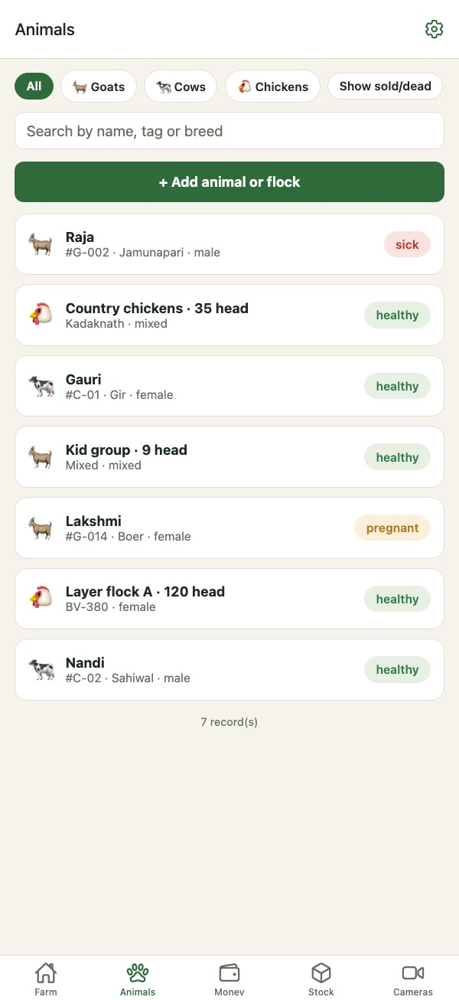
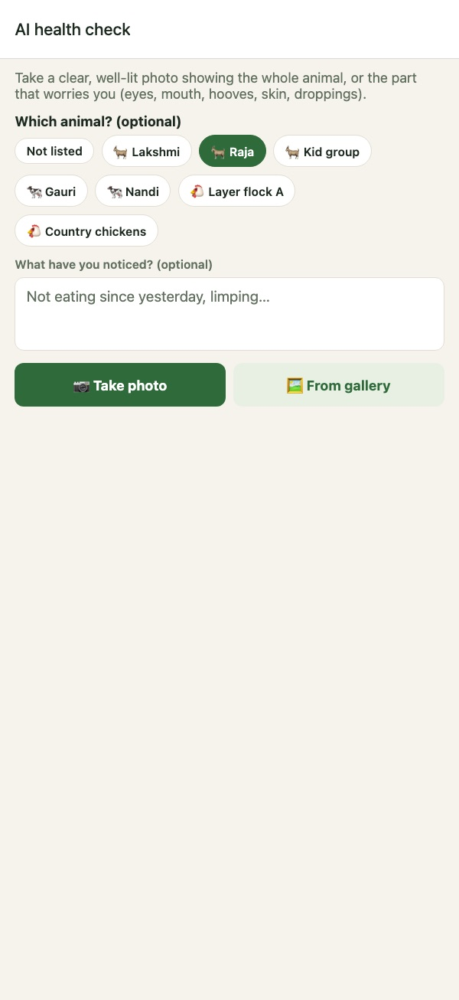

Screens from the app
Captured from the running Expo build in a phone-sized browser window, against the real API with sample farm data. The same screens build for iOS and Android.





Captured from the running Expo build in a phone-sized browser window, against the real API with sample farm data. The same screens build for iOS and Android.

